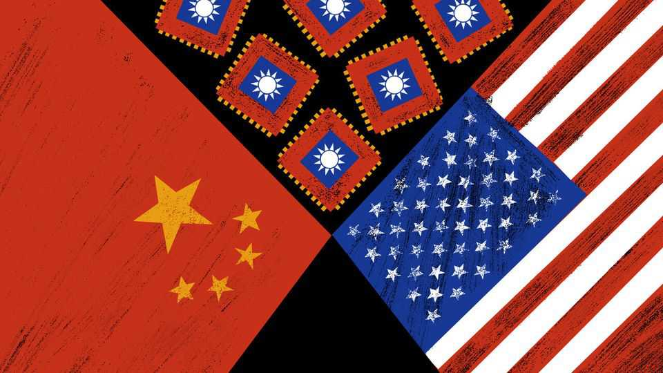

Allies learn how to bully America
Can Taiwan use its chipmaking industry to strong-arm Donald Trump?
July 2nd 2026

AROUND THE world, friends and adversaries of America are reaching the same, bleak conclusion. To earn President Donald Trump’s respect, show that you can hurt him. None of America’s security partners is foolish enough to threaten Mr Trump openly. But all of them watched Iran gain leverage over a stronger adversary by closing the Strait of Hormuz, and some were taking notes. Iran’s abuse of this choke point is simply appalling, such allies tut-tut. How do we get one of our own?
This line of reasoning can even be heard—albeit quietly, and behind closed doors—from well-placed folk in Taiwan, an island of 24m people that China claims as its own. It is a high-risk discussion. Taiwan’s survival as a self-ruled democracy relies on decisions made by America’s president. America is not treaty-bound to defend Taiwan from attack by China. Instead, successive commanders-in-chief, including Mr Trump, have left open the possibility that they might send in the Seventh Fleet if China tries to take the island by force. For decades that ambiguity has deterred Communist Party chiefs from making their move.
Mr Trump frightens Taiwan. True, he has sold the island weaponry in record-breaking quantities. But he has also mocked it as a tiny place outgunned by mighty China. During a state visit to Beijing in May, he emerged from hours of talks with China’s leader, Xi Jinping, parroting Chinese talking points. Mr Trump more or less accused Taiwan’s president, Lai Ching-te, of provoking China by seeking independence for the island. That is a red line for Chinese leaders, though Mr Lai’s actual position is waffly and cautious. Taiwan wants America to “travel 9,500 miles to fight a war”, Mr Trump grumbled. “I’m not looking for that.” He calls future arms sales to Taiwan a bargaining chip in negotiations with China over trade and Chinese-refined minerals used by American firms.
Taiwan knows that it needs leverage. After it embraced democracy 30-odd years ago, Taiwan won friends in Washington by talking up its status as a bastion of liberty, menaced by autocratic China. When despot-praising Mr Trump took office, Taiwanese officials quickly learned to downplay talk of shared values. They watched in horror when Mr Trump scorned Ukraine as a small country that had foolishly sought to defend itself against larger Russia. That could be us, Taiwanese shuddered.
Instead, Taiwan leans on two arguments about its strategic value to America. One involves Taiwan’s location in the “first island chain”, Pentagon jargon for the archipelago that hems in mainland China, running from Japan through Taiwan to the Philippines. The other involves Taiwan’s indispensable role as a global centre for making chips, including around 90% of the most advanced semiconductors. For some years Taiwanese politicians have called their chip industry a “Silicon Shield” or—in their more flowery moods—a sacred mountain that makes Taiwan too valuable for China to attack, or for America to abandon.
Other countries take a dimmer view of Taiwan’s chipmaking dominance. Even friendly governments resent their dependence on an earthquake-prone, typhoon-lashed island that imports almost all its raw materials and energy. Even before Mr Trump, Taiwan was being pressed to build chipmaking foundries overseas, notably in America, Japan and Germany. Mr Trump goes further, falsely charging Taiwan with stealing America’s chip industry decades ago. He has browbeaten TSMC and other leading firms to expand operations in Arizona, Texas and other states.
In Taipei, the capital, some policy types fret about the silicon shield being weakened over time, and about talented engineers being deployed to build and run foreign fabs. Others, though, suggest ways to turn Taiwan’s defensive shield into a weapon, right now. Taiwan has its own strait. The channel between the island and the mainland, spanning about 160km, carries some of the world’s most precious cargoes each day, including silicon chips.
To date, Taiwan’s focus has been on defence, and protecting itself from Chinese invasion fleets or naval blockades. But in Taipei well-placed people suggest that their indispensable role in global commerce can be used to coerce both America and China. They predict that Taiwan would stop exporting chips in the first hours of a crisis, throwing global markets and supply chains into chaos. The trigger would be an energy crisis. Electricity would soon run short if China blocks imports of coal, gas and oil. Chipmaking uses lots of power, and the government would prioritise hospitals and other civilian services. That gives Taiwan a moral argument for holding the world economy hostage. At that point, the gloomiest sorts imagine Mr Trump ordering Taiwan to surrender, after talks with China from which Taiwan is excluded. Optimists counter that such a sell-out would leave China controlling the world’s most important chipmakers. How would that be compatible with America’s quest for AI dominance, they ask?
In short, Taiwan has a choke point. Indeed, Mr Trump’s bluster about Taiwan stealing America’s chip industry is a form of backhanded compliment. Taiwan has cards and Mr Trump knows it. If this is blackmail, it is in a noble cause. A war over Taiwan between America and China would be terrifyingly dangerous. A Chinese takeover would snuff out a thriving, if chaotic, democracy, ushering in a nightmare of repression, show trials and mass re-education for millions of Taiwanese. The best way to avoid such disasters is for America to continue deterring China.
In Washington, Trump apologists credit him with reviving Ronald Reagan’s doctrine of “peace through strength”. That is an insult to the Gipper. Actually, other countries scent weakness in Mr Trump. They are learning from another Reagan saying: if you can’t make someone see the light, let ’em feel the heat. ■
Subscribers to The Economist can sign up to our Opinion newsletter, which brings together the best of our leaders, columns, guest essays and reader correspondence.